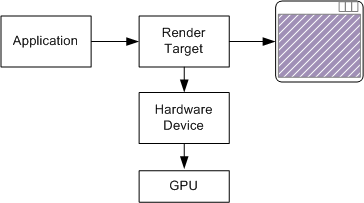
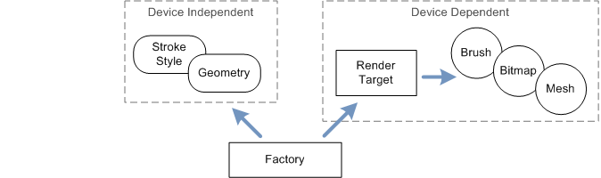

A render target is simply the location where your program will draw. Typically, the render target is a window (specifically, the client area of the window). It could also be a bitmap in memory that is not displayed. A render target is represented by the ID2D1RenderTarget interface.
A device is an abstraction that represents whatever actually draws the pixels. A hardware device uses the GPU for faster performance, whereas a software device uses the CPU. The application does not create the device. Instead, the device is created implicitly when the application creates the render target. Each render target is associated with a particular device, either hardware or software.

A resource is an object that the program uses for drawing. Here are some examples of resources that are defined in Direct2D:
Render targets are also considered a type of resource.
Some resources benefit from hardware acceleration. A resource of this type is always associated with a particular device, either hardware (GPU) or software (CPU). This type of resource is called device-dependent. Brushes and meshes are examples of device-dependent resources. If the device becomes unavailable, the resource must be re-created for a new device.
Other resources are kept in CPU memory, regardless of what device is used. These resources are device-independent, because they are not associated with a particular device. It is not necessary to re-create device-independent resources when the device changes. Stroke styles and geometries are device-independent resources.
The Windows documentation for each resource states whether the resource is device-dependent or device-independent. Every resource type is represented by an interface that derives from ID2D1Resource. For example, brushes are represented by the ID2D1Brush interface.
The first step when using Direct2D is to create an instance of the Direct2D factory object. In computer programming, a factory is an object that creates other objects. The Direct2D factory creates the following types of objects:
Device-dependent resources, such as brushes and bitmaps, are created by the render target object.

To create the Direct2D factory object, call the D2D1CreateFactory function.
ID2D1Factory *pFactory = NULL;
HRESULT hr = D2D1CreateFactory(D2D1_FACTORY_TYPE_SINGLE_THREADED, &pFactory);
The first parameter is a flag that specifies creation options. The D2D1_FACTORY_TYPE_SINGLE_THREADED flag means that you will not call Direct2D from multiple threads. To support calls from multiple threads, specify D2D1_FACTORY_TYPE_MULTI_THREADED. If your program uses a single thread to call into Direct2D, the single-threaded option is more efficient.
The second parameter to the D2D1CreateFactory function receives a pointer to the ID2D1Factory interface.
You should create the Direct2D factory object before the first WM_PAINT message. The WM_CREATE message handler is a good place to create the factory:
case WM_CREATE:
if (FAILED(D2D1CreateFactory(
D2D1_FACTORY_TYPE_SINGLE_THREADED, &pFactory)))
{
return -1; // Fail CreateWindowEx.
}
return 0;
The Circle program uses the following device-dependent resources:
Each of these resources is represented by a COM interface:
The Circle program stores pointers to these interfaces as member variables of the MainWindow class:
ID2D1HwndRenderTarget *pRenderTarget;
ID2D1SolidColorBrush *pBrush;
The following code creates these two resources.
HRESULT MainWindow::CreateGraphicsResources()
{
HRESULT hr = S_OK;
if (pRenderTarget == NULL)
{
RECT rc;
GetClientRect(m_hwnd, &rc);
D2D1_SIZE_U size = D2D1::SizeU(rc.right, rc.bottom);
hr = pFactory->CreateHwndRenderTarget(
D2D1::RenderTargetProperties(),
D2D1::HwndRenderTargetProperties(m_hwnd, size),
&pRenderTarget);
if (SUCCEEDED(hr))
{
const D2D1_COLOR_F color = D2D1::ColorF(1.0f, 1.0f, 0);
hr = pRenderTarget->CreateSolidColorBrush(color, &pBrush);
if (SUCCEEDED(hr))
{
CalculateLayout();
}
}
}
return hr;
}
To create a render target for a window, call the ID2D1Factory::CreateHwndRenderTarget method on the Direct2D factory.
To create the solid-color brush, call the ID2D1RenderTarget::CreateSolidColorBrush method on the render target. The color is given as a D2D1_COLOR_F value. For more information about colors in Direct2D, see Using Color in Direct2D.
Also, notice that if the render target already exists, the CreateGraphicsResources method returns S_OK without doing anything. The reason for this design will become clear in the next topic.
Â
Â